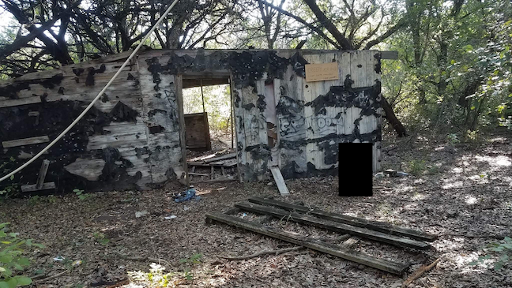

How does progression relate to destruction (or creation or modification)? Is progression a (non-)zero-sum game?
Focusing on American culture, progress is often correctly used synonymously with the word "better": computer chips being smaller and faster is progress; vehicles with higher fuel-efficiency is progress; cutting down hundreds of trees and displacing hundreds of animals to create a concrete path for people to get out into nature is progre... hol' up. What?!
This is exactly what happened in Part I. While it was never officially stated, the masterminds behind the grand vision of having a trail that looped the city undoubtedly viewed it as progress, for it was adding to the city's allure and improving the lives of all those who used it (but worsening the lives of those who had already been using what was previously there). How is this progress? How does destroying nature to get people into nature make any sense?
Progress is a non-zero-sum game in both directions. In the negative direction, the demolishing of the path may have encouraged a handful of people to get out and exercise, but it can be argued that the majority of users would have found a way to exercise anyway. I don't need a park nearby to motivate me to exercise. This is the same thinking as someone who gets a piece of exercise equipment in hopes that the money they spent will motivate them to exercise. And yet, months later the barbell/bike/treadmill is still sitting in the same spot, gathering dust and cobwebs. In the positive direction, the creating of mountain bike features using dead or scrap wood is progressing the trails at the expense of nothing. No one is missing the wood, the only ones who are negatively affected are those who participate (unsuccessfully) of their own accord. So why couldn't this be the same? Why couldn't this trail be a positive non-zero-sum game? A few answers immediately come to mind.
First, appealing to the lowest common denominator is the main focus of the board who makes these decisions. There is no if-you-can't-do-it-not-my-fault option (it = navigate the non-paved trails), else they look bad, lose their seat, and get replaced by someone else who will listen to the people's complaints. But who says there can't be an IYCDINMF option? Voters elect these board members into office in hopes that they will pursue their interests. Shouldn't the people who have a direct stake in the outcome—those who use the woods regularly and have homes nearby—have their votes count for more? The answer is a resounding yes. Akin to a representative living outside of their responsible district, it is wrong for those who will never use this path to have a significant say in its fruition and all the costs and destruction that come along with it. Sure, it's their city and park, too, but it's also easy to dictate how others should feel and behave when not directly affected by the situation.
Second, the feeling of the need to do something. Having been elected to office, those who hold said office feel the need to contribute in some form, to make their mark and prove to their constituents that they're not just twiddling their thumbs waiting for something to do, but rather actively working to improve the community and its amenities. Working on the trivial is better than working on nothing, and in the political sphere, if you ain't producin', you ain't comin' back.
Third, the officials genuinely believe that's what best for the city and its people. They have their opinion (once again, most likely without skin in this game, but likely in others) and I have mine (with bona fide skin in this one). I can only blame them for not considering my attachment to the land nor their detachment—their pushing for and enacting what they think is best is laudable as a practice and philosophy, except when it affects me!
These reasons apply not only to building public trails, but anything additive related to "progress". [FINISH????]
All of this points to the larger, endemic issue of American consumerism. There's a common belief that growth and progress require literal growth,
Points to larger problem of american consumerism